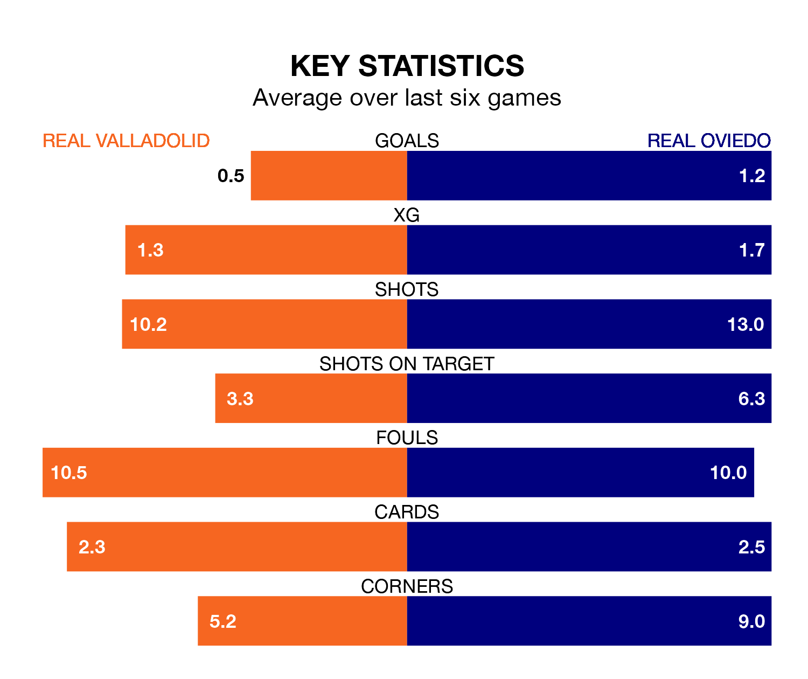

Real Valladolid face Real Oviedo on Friday seeking to protect their long unbeaten run in the Segunda División.
Valladolid are unbeaten in five, with one win and four draws, ahead of the 7.30pm kick-off.
They face an Oviedo team who have won three and drawn one over the same number of games.
With 34 goals in 27 games so far this season, Oviedo are scoring more than average in the league with 1.3 goals per game. And they are conceding fewer than average, letting in 20 goals at a rate of 0.7 per game.
Valladolid, meanwhile, are average scorers, with 1.1 goals per game. They have conceded 1.0 goal per game.
In the last 10 years, Valladolid and Oviedo have played each other on 10 occasions. Valladolid won six of them and Oviedo four.
On average, Valladolid scored 1.6 goals and Oviedo 1.4 in those matches.
Their last meeting was on September 24, when Valladolid won 1-0 away.
The home team are sixth in the table after 27 games, of which they have won 12 and drawn six, earning 42 points.
The visitors are one place behind Valladolid in seventh, with 10 wins and 11 draws putting them on 41 points.
With Leo Román between the sticks, Oviedo can rely on one of the league's safest pair of hands. He has kept 10 clean sheets in his 27 appearances this season in the Segunda División.
In Valladolid's net, Jordi Masip has six clean sheets in 16 games. He has conceded a goal every 120 minutes, 10% more often than the 128 minutes between goals for Román Riquelme.
Valladolid's last match was on Saturday, a 1-1 draw against Sporting Gijón, with Amath Ndiaye Diedhiou getting the goal for Valladolid.
Oviedo beat Burgos CF 5-0 last time out, also on Saturday, with Francisco Sebastián Moyano Jiménez (three), Borja Bastón and Jaime Seoane on the scoresheet.
Updated: 12:18 (UTC), 19/02/24